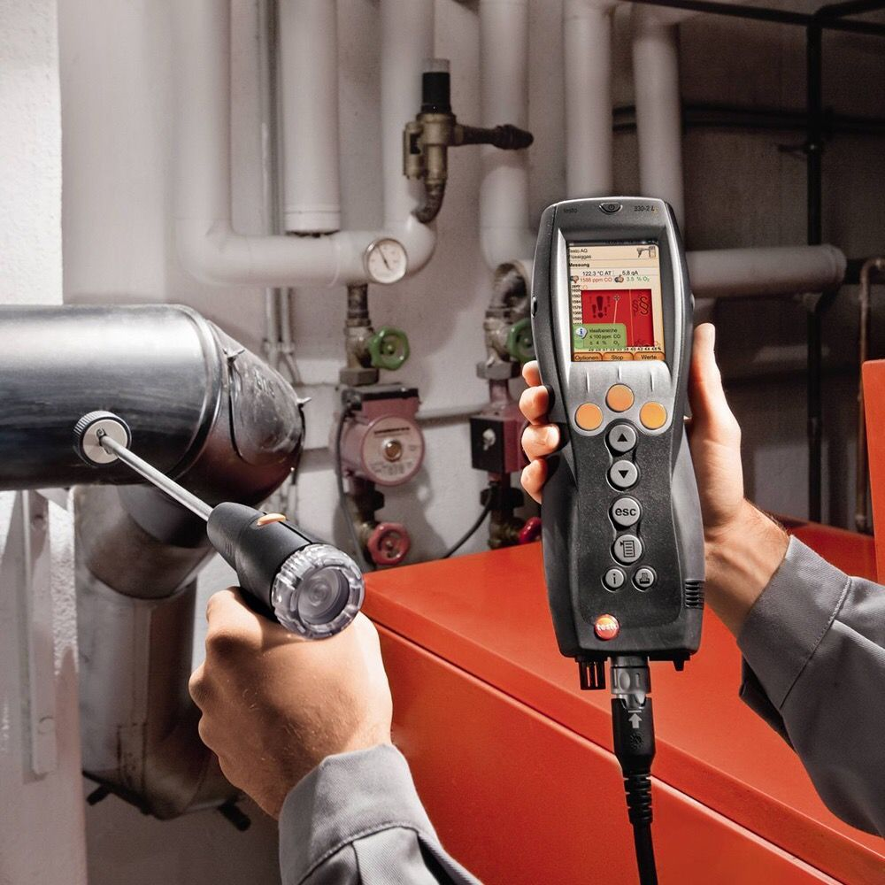

كشف التسرب وصيانة الخزانات بالرياض
فحص إلكتروني متقدم واكتشاف أماكن تهريب المياه بدقة عالية، مع تقديم أعمال الصيانة التشغيلية ولحام الشروخ.

كشف تسربات الخزانات
فحص إلكتروني دقيق بالتقنيات الصوتية والحرارية لاكتشاف أماكن التهريب بالخزان وتقليل الحاجة إلى التكسير.

صيانة خزانات المياه
صيانة فنية تشغيلية تشمل تغيير العوامات، صيانة المحابس، وإصلاح الشروخ لضمان سلامة واستمرارية عمل الخزان.

لحام خزانات الفيبر جلاس
معالجة ولحام شروخ وثقوب الخزانات العلوية والبلاستيكية والفيبر جلاس بمواد عزل سريعة الجفاف وقوية المتانة.
تغيير وتركيب عوامة الخزان
استبدال العوامات الميكانيكية والكهربائية الذكية بقطع أصلية إيطالية تمنع فيضان وهدر المياه بالرياض.
خدمات تركيب وفحص واعتماد الخزانات بالرياض
تجهيز وتركيب الخزانات الجديدة بالمواصفات الهندسية، مع الفحص المخبري الدقيق لجودة مياه الشرب واعتماد المعايير الصحية الرسمية.

تركيب خزانات المياه بالرياض
تجهيز القواعد وتوريد وتركيب الخزانات العلوية والأرضية وتوصيل خطوط التغذية والمضخات وفق معايير الكود السعودي.
فحص جودة مياه الخزانات
تحليل مخبري شامل لقياس نسبة الأملاح TDS، الرقم الهيدروجيني pH، وفحص البكتيريا لضمان سلامة المياه وصلاحيتها للاستهلاك.

دليل أفضل شركة خزانات بالرياض
معايير اختيار الشركة المعتمدة، الشهادات والضمانات، والتراخيص المعتمدة لتقديم خدمات الخزانات الشاملة بالعاصمة.
كيف تختار خدمة الخزان المناسبة؟
نساعدك في إتقان الخليج على تحديد الخدمة الفنية الأنسب لخزانك بناءً على تقييم المشكلة أو الهدف المطلوب دون تكاليف زائدة.
خدمات التنظيف والغسيل
يُوصى بها عند ملاحظة تغير لون أو طعم المياه، أو وجود ترسبات طينية بقعر الخزان، أو مرور 6 أشهر على آخر غسيل.
اعرف أكثر عن التنظيفخدمات التعقيم والتطهير
تُطلب كخطوة تكميلية أساسية بعد التنظيف أو عند ركود المياه لفترات طويلة لضمان القضاء التام على الفطريات والبكتيريا.
اعرف أكثر عن التعقيمخدمات العزل والكشف
تُطلب عند ملاحظة فقدان سريع للمياه، أو رطوبة محيطة بالخزان، أو لحماية الخرسانة من المياه الجوفية والحرارة.
اعرف أكثر عن العزلخطوات تحديد وتنفيذ الخدمة مع إتقان الخليج
أسئلة شائعة حول خدمات الخزانات
إليك إجابات لأبرز التساؤلات الفنية حول اختيار وتنفيذ خدمات غسيل وتعقيم وعزل الخزانات بالرياض.
ما الخدمات التي تقدمها إتقان الخليج لخزانات المياه بالرياض؟
نوفر منظومة خدمات متكاملة تشمل غسيل وتنظيف الخزانات، تعقيم وتطهير المياه، عزل الخزانات المائي والإيبوكسي، العزل الحراري، كشف تسربات الخزانات بدون تكسير، صيانة المحابس والعوامات، ولحام خزانات الفيبر جلاس.
كيف أعرف الخدمة المناسبة لخزان المياه في منزلي؟
تعتمد الخدمة على مشكلة الخزان؛ فإذا كانت المياه معكرة أو بها ترسبات يتم اختيار التنظيف، وإذا كان الهدف القضاء على البكتيريا يتم التعقيم، وعند وجود تسريب أو رطوبة يُطلب العزل المائي أو الفحص الإلكتروني للتسربات.
هل يختلف غسيل الخزان وتنظيفه عن التعقيم؟
نعم، الغسيل يركز على الكشط الميكانيكي وشفط الطين والأتربة والصدأ من القاع والجدران، بينما التعقيم خطوة تكميلية رشاشية تهدف للتخلص من الكائنات الدقيقة والبكتيريا العالقة بأسطح الخزان.
متى يحتاج الخزان إلى أعمال العزل المائي أو الإيبوكسي؟
يُطلب العزل عند إنشاء خزان خرساني جديد، أو عند ملاحظة تشققات ورطوبة محيطة بالخزان، أو لحماية الهيكل من التفاعلات الكيميائية والمياه الجوفية.
متى يُنصح بطلب خدمة كشف تسربات الخزانات؟
يُنصح بطلب كشف التسربات عند ملاحظة انخفاض سريع في منسوب مياه الخزان، أو ارتفاع غير مبرر في فاتورة المياه، أو ظهور علامات رطوبة على الجدران المجاورة للخزان.
هل تختلف الخدمة حسب نوع الخزان (أرضي أو علوي)؟
نعم، الخزانات الأرضية الخرسانية تتطلب معدات شفط مضخات وكشط رواسب أعمق، بينما الخزانات العلوية البلاستيكية والفيبر جلاس تتطلب أدوات غسيل خاصة ومواد لحام معتمدة.